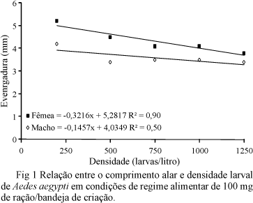
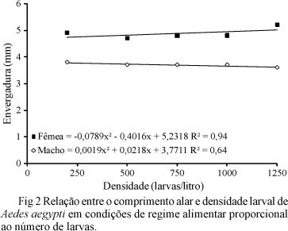

Services on Demand Services on Demand
Article Article


Indicators Indicators


Related links Related links


Share Share


Neotropical Entomology Neotropical Entomology
Print version ISSN 1519-566X Print version ISSN 1519-566X
On-line version ISSN 1678-8052 Online version ISSN 1678-8052
Neotrop. Neotrop. entomol. Entomol. vol.38 no.6 Londrina Nov./Dec. vol.38 no.6 Londrina Nov./Dec. 2009 2009
http://dx.doi.org/10.1590/S1519-566X2009000600020 http://dx.doi.org/10.1590/S1519-566X2009000600020
PUBLIC HEALTH PUBLIC HEALTH
Relação entre densidade larval e ciclo de vida, tamanho e fecundidade de Aedes ( Stegomyia ) aeg ypti (L.) (Diptera: Culicidae) em laboratório The relationship between density and larval life cycle, size and fecundity of Aedes (Stegomyia) aeg ypti (L.) (Diptera: Culicidae) in laboratory
Larval density as related to life cycle, size and fecundity of Aedes ( Stegomyia ) aeg ypti (L.) (Diptera: Culicidae) in laboratory Larval density related to the life cycle, size and fecundity of Aedes (Stegomyia) aeg ypti (L.) (Diptera: Culicidae) in laboratory
Eduardo B Beserra I, IV ; B Beserra Eduardo I, IV; Carlos RM Fernandes II, IV ; Carlos RM Fernandes II, IV; Paulino S Ribeiro III, IV Paulino Ribeiro S III, IV
I Depto. I Department. de Biologia, Univ. Biology, Univ. Estadual da Paraíba; ebarbosa@uepb.edu.br State of Paraiba; ebarbosa@uepb.edu.br
II Mestrando do Programa de Pós-graduação em Meio Ambiente - PRODEMA, UFPB/UEPB II Master of the Graduate Program in Environment - PRODEMA, UFPB / UEPB
III Graduando em Ciências Biológicas, Bolsista PIBIC/CNPq III Majoring in Biological Sciences, Fellow PIBIC / CNPq
IV Univ. IV Univ. Estadual da Paraíba, Campus Universitário, Rua Juvêncio Arruda s/n, Bodocongó, 58109-753, Campina Grande, PB State of Paraiba, University Campus, Juvêncio Rua Arruda s / n, Bodocongó, 58109-753, Campina Grande, PB
RESUMO SUMMARY
A presente pesquisa teve por objetivo avaliar a influência da densidade larval sobre o ciclo de vida, tamanho e fecundidade de Aedes aegypti (L.). This research aimed to evaluate the influence of larval density on the life cycle, size and fecundity of Aedes aegypti (L.). Os bioensaios foram conduzidos a 26 ± 2ºC e 12h de luz. Bioassays were conducted at 26 ± 2 ° C and 12 hours of light. Foram utilizadas cinco densidades larvais (200, 500, 750, 1000 e 1250 larvas/l) e dois sistemas de alimentação (um com alimentação fixa de 100 mg de ração e outro com quantidade de alimento proporcional ao número de larvas/bandeja). Five larval densities were used (200, 500, 750, 1000 and 1250 larvae / l) and two power systems (with fixed power 100mg feed and the other with the amount of food proportional to the number of larvae / tray). Avaliou-se diariamente, o tempo de desenvolvimento e sobrevivência de ovo e larva, a razão sexual, a longevidade, a fecundidade e o tamanho dos adultos. It evaluated daily, development time and egg and larval survival, sex ratio, longevity, fertility and size of adults. O ciclo de vida de A . aegypti foi significativamente afetado pela densidade quando ofertados 100 mg de ração por bandeja. The life cycle of A. Aegypti was significantly affected by the density when offered 100 mg of feed per tray. O período de desenvolvimento larval aumentou de 8,3 para 37,9 dias, a fecundidade diminuiu de 105,7 para 41,8 ovos/fêmea assim como o comprimento alar de 4,6 mm para 3,6 mm, quando comparadas às densidades de 200 para 1250 larvas/l, respectivamente. Larval development period increased from 8.3 to 37.9 days, fertility decreased from 105.7 to 41.8 eggs / female as well as the wing length of 4.6 mm to 3.6 mm, compared to the densities 200 1250 larvae / l, respectively. Não foram detectadas diferenças significativas dessas variáveis quando foram ofertados 1,9 mg de ração por larva, exceto para o tamanho dos adultos. There were no significant differences in these variables when they were offered 1.9 mg of feed for larvae, except for the size of adults. Fêmeas criadas a 1250 larvas/l foram maiores, com comprimento alar médio de 5,2 mm. Females raised to 1250 larvae / l were higher, with average length of haul of 5.2 mm.
Palavras-chave: Aedini, competição intraespecífica, alimentação, biometria, biologia Keywords: Aedini, intraspecific competition, food, biometrics, biology
ABSTRACT ABSTRACT
We focused on the evaluation of the influence that the larval density have on the life cycle, size and fecundity of Aedes aegypti (L.). We focused on the evaluation of the influence que the larval density have on the life cycle, size and fecundity of Aedes aegypti (L.). The bioassays were conducted at 26 ± 2ºC and at 12h light. The bioassays Were Conducted at 26 ± 2 ° C and at 12 h light. Five larval densities (200, 500, 750, 1000 and 1250 larvae/l) and two feeding systems (one with a fixed amount of 100 mg of food, and other with an amount of food proportional to the number of larvae/tray) were tested. Five larvae densities (200, 500, 750, 1000 and 1250 larvae / l) and two feeding systems (one with a fixed amount of 100 mg of food, and other with an amount of food proportional to the number of larvae / tray) Were tested. Egg and larval development time and survivorship, sex ratio, longevity, fecundity and the size of adults were evaluated on a daily basis. Egg and larval development time and survivorship, fri ratio, longevity, fecundity and the size of adults Were Evaluated on a daily basis. The life cycle of A . aegypti was significantly affected by the density when offered 100 mg of food per tray. The life cycle of A. Aegypti was Significantly affected by the density When offered 100 mg of food per tray. The period of larval development increased from 8.3 to 37.9 days whereas female fecundity and wing length decreased from 105.7 to 41.8 eggs/female and from 4.6 mm to 3.6 mm, respectively, by changing from a density of 200 to 1250 larvae/l. The period of larval development Increased from 8.3 to 37.9 days Whereas female fecundity and wing length Decreased from 105.7 to 41.8 eggs / female and from 4.6 mm to 3.6 mm, respectivamente, by changing the density of from 200 to 1250 larvae / l. Significant differences of these variables were not detected when offering 1.9 mg of food per larvae, except for the size of the adults. Significant differences of These variables Were not detected When offering 1.9 mg of food per larvae, except for the size of the adults. Females emerged from rearing densities of 1250 larvae/l grew larger, with an average wing length of 5.2 mm. Females emerged from rearing densities of 1250 larvae / l grew larger, with an average wing length of 5.2 mm.
Key words: Aedini, intraspecific competition, feeding, biometry, biology Key words: Aedini, intraspecific competition, feeding, biometry, biology
As fases aquáticas de Aedes aegypti (L.) desenvolvem-se, preferencialmente, em recipientes artificiais onde há grande quantidade de água armazenada e baixa evaporação (Honório & Lourenço-de-Oliveira 2001). Aquatic stages of Aedes aegypti (L.) develop preferentially in artificial containers where there are lots of stored water and low evaporation (Honorius & Lourenço-de-Oliveira 2001). Em sua fase adulta, o inseto está associado às atividades do homem por suas características de alimentação e reprodução (Aldama et al 2001). In the adult stage, the insect is associated with man's activities for their feeding and breeding characteristics (Aldama et al 2001). Durante o seu desenvolvimento, cada população de A . aegypti apresenta padrões de crescimento, fecundidade e longevidade particulares, diretamente influenciados por fatores intrínsecos à espécie e por fatores ambientais externos. During its development, each population of A. Aegypti shows growth patterns, particular fecundity and longevity, directly influenced by intrinsic factors and the species by external environmental factors. A densidade populacional é um fator que exerce influência no desenvolvimento dos insetos, e os seus efeitos sobre os indivíduos são semelhantes ou até mais pronunciados do que aqueles observados quando da redução na qualidade e quantidade de alimento (Tauber et al 1986). Population density is a factor that influences the development of insects, and its effects on individuals are similar or even more pronounced than those observed when the reduction in the quality and quantity of food (Tauber et al 1986). A longevidade, o número de ovos por postura e a capacidade vetorial estão relacionados ao tamanho das fêmeas de mosquitos (Gama et al 2005). The longevity, the number of eggs per clutch and the vectorial capacity are related to the size of mosquito females (Gamma et al 2005). Embora o tamanho corporal de várias espécies tenha base genética, fatores ambientais, como a densidade larval, afetam diretamente seu desenvolvimento corporal e indiretamente sua fisiologia (Nelson 1986). Although the body size of various species have genetic, environmental factors such as larval density, directly affect their body development and indirectly their physiology (Nelson 1986).
Os efeitos da densidade no ciclo de vida de insetos vetores estão relacionados principalmente à competição por recursos alimentares, já que o aumento na densidade sem correspondente aumento na disponibilidade do recurso alimentar, leva ao deslocamento, exclusão, canibalismo ou mesmo à morte por inanição, como verificado para Aedes polynesiensis Marks, que teve o período de desenvolvimento e o tamanho dos adultos afetados devido à competição por alimento (Mercer 1999). The effects of density on the insect vectors life cycle are mainly related to competition for food resources, since the increase in density without a corresponding increase in the availability of food resources, leads to displacement, exclusion, cannibalism or even death by starvation, as checked for Aedes polynesiensis Marks, who had the development period and the size of the adults affected due to competition for food (Mercer 1999).
O conhecimento sobre como a densidade interfere no desenvolvimento de insetos vetores é fundamental para a sua caracterização biológica, além de subsidiar as avaliações de programas de controle, pois gera informações sobre a capacidade de infecção e transmissão de patógenos (Barata et al 2001) e informações que podem contribuir para a criação em laboratório. Knowledge about how the density interferes with the development of insect vectors is essential to their biological characteristics, in addition to supporting evaluations of control programs because it generates information on the capacity of infection and transmission of pathogens (Barata et al 2001) and information that may contribute to the establishment of laboratory. O presente trabalho teve por objetivo avaliar a influência da densidade larval sobre o ciclo de vida do A . aegypti , buscando a otimização de sua criação em laboratório. This study aimed to evaluate the influence of larval density on the life cycle of the A. Aegypti, seeking to optimize its creation in the laboratory.
Material e Métodos Material and methods
Obtenção e criação de A . aegypti em laboratório. A criação de A . aegypti foi iniciada a partir de ovos coletados em armadilhas de oviposição instaladas no Bairro de Nova Brasília, município de Campina Grande, PB (07° 13' 32"S, 35° 54' 15"W). Collection and creation of A. Aegypti in the laboratory. Creating A. Aegypti was started from eggs collected in oviposition traps installed in the Nova Brasília neighborhood, city of Campina Grande, PB (07 ° 13 '32 "S, 35 ° 54 '15 "W). Após a coleta, os ovos foram mantidos em sala climatizada (26 ± 2°C e fotofase de 12h). After collection, the eggs were kept in a room (26 ± 2 ° C and photoperiod of 12h). Os ovos foram colocados para secar por 48h e, em seguida, acondicionados em bandejas plásticas (40 x 40 x 7,5 cm), com um terço de sua capacidade preenchida com água desclorada. The eggs were placed to dry for 48 hours and then packed in plastic trays (40 x 40 x 7.5 cm), with a third of its capacity filled with de - chlorinated water. Após a eclosão, foi ofertado como alimento ração para peixe ornamental (Alcon/goldfish crescimento), na proporção de 100 mg/bandeja. After hatching, was offered as food for ornamental fish feed (Alcon / goldfish growth), the proportion of 100 mg / tray. Após a mudança de estágio, as pupas foram sexadas, acondicionadas em copos de 250 ml e transferidas (100 machos e 100 fêmeas) para as gaiolas de criação (40 x 40 x 30 cm) de adultos. After the phase change, the pupae were sexed, packed in cups of 250 ml and transferred (100 males and 100 females) for creating cages (40 x 40 x 30 cm) in adults. Os adultos emergidos foram alimentados com solução de mel a 20% e às fêmeas foi permitido o repasto sanguíneo em codornas, Coturnix japonica , durante 30 min, três vezes por semana. The emerging adults were fed with honey solution and 20% females were allowed to blood meal in quail, Coturnix japonica, for 30 min, three times a week. Após o repasto, colocou-se, em cada gaiola, um copo descartável de 250 ml com água desclorada, com um funil plástico revestido por papel filtro como substrato de oviposição. After the meal, he was placed in each cage, a disposable cup 250 ml with dechlorinated water with a plastic funnel lined with filter paper as oviposition substrate.
Efeito da densidade no desenvolvimento larval, tamanho e fecundidade de adultos de A . aegypti . Para verificar o efeito da densidade larval sobre o ciclo de vida de A . aegypti , foram realizados dois bioensaios em diferentes densidades com: 1) alimentação fixa, ofertando-se 100 mg de ração para peixe/bandeja de criação larval e 2) com alimentação proporcional ao número de larvas, ofertando-se 1,9 mg de ração/larva/bandeja. ... Density effect on larval development, size and fecundity of the adult aegypti To check the effect of larval density on the Life Cycle aegypti, two bioassays were performed in different densities with: 1) fixed power, ofertando- 100 mg of feed for fish / larval rearing tray and 2) proportional to the number of larvae feeding, offering-up feed 1.9 mg / larvae / tray.
O bioensaio 1 foi conduzido em sala climatizada (26 ± 2°C e fotofase de 12h), sendo testadas as densidades de 200, 500, 750, 1000 e 1250 larvas/ litro, com cinco repetições cada. The bioassay 1 was conducted in a room (26 ± 2 ° C and photoperiod of 12h), the densities being tested 200, 500, 750, 1000 and 1250 larvae / liter, with five repetitions each.
Ovos de A . aegypti oriundos da criação de laboratório (F 1 ) foram acondicionados em bandejas plásticas (17 x 12 x 7,5 cm), com um terço de sua capacidade preenchida com água desclorada. The eggs. Aegypti coming from laboratory setting (F 1) were placed in plastic trays (17 x 12 x 7.5 cm), with a third of its capacity filled with de - chlorinated water. Após a eclosão, as larvas foram transferidas para bandejas plásticas (40 x 27 x 7 cm) cobertas com tela de nylon, contendo 1 litro de água para as respectivas densidades. After hatching, the larvae were transferred to plastic trays (40 x 27 x 7 cm) covered with nylon mesh, containing 1 liter of water to their respective densities. A cada bandeja adicionaram-se 100 mg de ração para peixe a cada três dias. To each tray were added 100 mg of feed for fish every three days.
As pupas foram sexadas e mantidas em copos descartáveis de 250 ml até a emergência dos adultos. The pupae were sexed and maintained in disposable cups 250 ml to adult emergence. Vinte casais foram transferidos para gaiolas (20 x 20 x 20 cm), totalizando cinco gaiolas por tratamento. Twenty couples were transferred to cages (20 x 20 x 20 cm) with five cages per treatment. Os adultos foram alimentados com solução de mel a 20%, sendo permitido às fêmeas o repasto sanguíneo em codornas, durante 15 min três vezes por semana. Adults were fed with 20% honey solution is allowed to females the blood meal in quail for 15 min three times a week. Após cada repasto, colocou-se em cada gaiola, um copo de plástico de 150 ml com água desclorada e um funil com papel toalha, como substrato de oviposição. After each meal, he was placed in each cage, a 150 ml plastic beaker with dechlorinated water and a funnel with a paper towel, as oviposition substrate.
Foram feitas avaliações diárias, registrando-se, para cada densidade, a duração, em dias, do período de desenvolvimento e a sobrevivência, descrita como porcentagem de indivíduos vivos em relação ao total inicial de indivíduos, das fases de ovo e larva, a razão sexual (nº @&/nº B& + nº @&), fecundidade (número médio de ovos/fêmea), longevidade (dias) e o tamanho dos adultos. Daily evaluations were made, registering for each density, the duration in days, the period of development and survival, described as percentage of living individuals to the initial total number of individuals, of the eggs and larvae, the reason sexual (n @ & / No No B & + @ &), fecundity (number of eggs / female), longevity (days) and size of adults. Como medida do tamanho dos adultos tomou-se como parâmetro a envergadura da asa, medindo-a da álula até sua extremidade, desconsiderando-se a franja. As a measure of the size of the adults was taken as a parameter the wing span, measuring the Alula to its end, disregarding the fringe. Vinte mosquitos, para cada densidade e sexo, foram medidos seguindo método descrito por Gama et al (2005). Twenty mosquitoes, for each density and sex were measured following the method described by Gamma et al (2005). A medição das asas foi realizada utilizando-se de ocular micrométrica acoplada ao microscópio estereoscópico. The measurement was conducted using the wings is ocular micrometer attached to a stereomicroscope.
O segundo bioensaio seguiu o mesmo método do bioensaio anterior, sendo modificada apenas a quantidade de alimento oferecido às larvas. The second bioassay followed the same method as above bioassay, only modified with the amount of food offered to the larvae. Nesse caso, as larvas foram alimentadas com 1,9 mg de ração para peixe por larva, a cada três dias, totalizando 380, 950, 1425, 1900 e 2375 mg para as densidades de 200, 500, 750, 1000 e 1250 larvas/l, respectivamente. In this case, the larvae were fed with 1.9 mg of feed for fish larvae, every three days, totaling 380, 950, 1425, 1900 and 2375 mg for densities of 200, 500, 750, 1000 and 1250 larvae / l, respectively.
Análise estatística. Dados referentes à duração e sobrevivência das fases de ovo e larva, longevidade, fecundidade e tamanho de adultos foram submetidos à análise de variância e as médias comparadas pelo teste de Tukey (P < 0,05), seguindo delineamento experimental inteiramente casualizado. Statistical analysis. Data relating to the duration and survival of the eggs and larvae, longevity, fecundity and adult size were subjected to analysis of variance and means were compared by Tukey test (P <0.05), following a completely randomized design . Para testar os efeitos das densidades larvais sobre o tamanho de adultos de A . aegypti , a análise seguiu o esquema fatorial 2 x 5 (dois sexos: machos e fêmeas e cinco densidades: 200, 500, 750, 1000 e 1250 larvas/L). . To test the effects of larval densities on the size of the adult aegypti, the analysis followed the factorial 2 x 5 (two sexes: male and female and five densities: 200, 500, 750, 1000 and 1250 larvae / L) . Foram construídas linhas de tendências utilizando-se de equações lineares (y = ax + b) e quadráticas (y = ax 2 + bx + c) para expressar a relação entre o tamanho de adultos e a densidade larval (Gama et al 2005). Trend lines were built up using the linear equation (y = ax + b) and quadratic (y = ax 2 + bx + c) to express the relationship between the sizes of adult and larval density (Gamma et al 2005).
Resultados e Discussão Results and discussion
Efeito da densidade no desenvolvimento larval, no tamanho e fecundidade dos adultos de A . aegypti . Não foram observadas diferenças significativas quanto à duração do período embrionário e sobrevivência dos ovos de A . aegypti criados em cinco densidades larvais quando a quantidade de alimento oferecido foi ou não ajustada em relação à densidade larval ( Tabelas 1 e 2 ). Density effect on larval development, size and fecundity of adult A. Aegypti. There were no significant differences in the duration of the embryonic period and survival of eggs of A. Aegypti created in five larval densities when the amount of food offered was or not adjusted in relation to larval density ( Tables 1 and 2 ). Porém, para o bioensaio 2 constatou-se maior duração e diminuição da sobrevivência do ovo em relação ao bioensaio 1, discordando dos resultados verificados por Beserra et al (2006) e Beserra & Castro Jr (2008) para diferentes populações de A . aegypti . However, for the bioassay 2 was found to longer life and decreased survival of the egg compared to the bioassay 1, disagreeing with the results verified by Beserra et al (2006) and Beserra & Castro , Jr. (2008) for different populations of A. Aegypti.
O aumento da densidade foi prejudicial ao desenvolvimento larval de A . aegypti em relação às demais fases do desenvolvimento em função da disponibilidade de alimento. The increase in density was harmful to larval development A. Aegypti compared to other stages of development depending on food availability. A duração do desenvolvimento larval aumentou de 8,3 dias na densidade de 200 larvas/l, para 37,9 dias na de 1250 larvas/l quando se ofertaram 100 mg de ração/bandeja ( Tabela 1 ). The larval development increased from 8.3 days in the density 200 larvae / l to 37.9 days in the 1,250 larvae / l when feed tendered 100 mg / tray ( Table 1 ). O efeito da densidade sobre o desenvolvimento larval justifica-se por ser esta a única fase de desenvolvimento do inseto a buscar alimento para seu crescimento e desenvolvimento. The effect of density on the larval development is justified because this is the only insect development phase to seek food for their growth and development. Em situação de escassez de alimento, como no bioensaio 1, aumenta a competição com o incremento da densidade, o que interfere na obtenção e consequente assimilação de nutrientes. In a situation of food shortages, as in bioassay 1, increases competition with increasing density, which interferes with the acquisition and subsequent assimilation of nutrients. Deve-se ressaltar que eventuais carências nutricionais decorrentes da baixa assimilação de nutrientes alongam o tempo de desenvolvimento de imaturos, bem como aumenta a mortalidade na fase de pupa como observado para Anopheles darlingi Root (Bergo et al 1990). It should be noted that any nutritional deficiencies arising from poor nutrient assimilation lengthen the immature development time and increases mortality in the pupal stage as observed for Anopheles darlingi Root (Bergo et al 1990).
Quando o alimento oferecido foi proporcional à quantidade de larvas (Bioensaio 2, Tabela 2 ), não ocorreram efeitos negativos e a duração do desenvolvimento larval permaneceu praticamente constante, caindo de 8,3 dias a 200 larvas/l, para cerca de 6,0 dias para as demais densidades, o que está em acordo com os resultados de Beserra et al (2006). When the food offered was proportional to the amount of larvae (Bioassay 2, Table 2 ), there were no negative effects and duration of larval development remained practically constant, falling from 8.3 days to 200 larvae / l to about 6.0 days for the other densities, which is in agreement with the results of Beserra et al (2006). Assim como relatado para outros insetos (Agnew et al 2000, Olejnícek & Gelbic 2000, Hooper et al 2003), a densidade populacional de A . aegypti está relacionada à quantidade de alimento disponível. As reported for other insects (Agnew et al 2000 Olejnícek & Gelbic 2000 Hooper et al 2003), the population density of A. Aegypti is related to the amount of available food. O aumento proporcional na disponibilidade de alimento em relação à densidade larval diminui a competição e favorece o ganho nutricional, com consequente redução no tempo de desenvolvimento de cada geração e aumento na razão de crescimento populacional (Hooper et al 2003). The proportional increase in the availability of food in relation to larval density decreases competition and promotes nutritional gain, with a consequent reduction in development time of each generation is increased due to population growth (Hooper et al 2003).
Não foram detectadas diferenças significativas quanto à sobrevivência larval de A . aegypti nas duas situações de fornecimento da ração ( Tabelas 1 e 2 ). There were no significant differences in larval survival A. Aegypti in both cases of supply of feed ( Tables 1 and 2 ). Embora a mortalidade de 59,4% observada na densidade de 1250 larvas/l, com 100 mg de ração/bandeja ( Tabela 1 ), possa ser considerada alta, ela está próxima dos valores observados por Gama et al (2005). Although mortality of 59.4% observed in the density 1,250 larvae / l, 100 mg of feed / tray ( Table 1 ), may be considered high, it is close to the values observed by Gamma et al (2005). A mortalidade nessa condição de criação pode ter ocorrido em função da disponibilidade de alimento (quantidade de alimento independente da densidade larval), assim como constatado para diversas outras espécies de mosquitos (Agnew et al 2000, Olejnícek & Gelbic 2000, Hooper et al 2003, Gama et al 2005). The mortality in this setting condition may have occurred due to the availability of food ( the number of independent feed of larval density), as observed for several other species of mosquitoes (Agnew et al 2000, Olejnícek & Gelbic 2000 Hooper et al 2003, Gama et al 2005). Essa suposição foi confirmada pelos resultados do bioensaio 2, quando se ofereceu quantidade de alimento proporcional ao número de indivíduos, obtendo-se sobrevivência superior a 90%, mesmo nas maiores densidades ( Tabela 2 ). This assumption was confirmed by the results of the bioassay 2 when amount of food offered proportional to the number of individuals, resulting in survival greater than 90%, even at higher densities ( Table 2 ).
Houve diferença significativa quanto à razão sexual, obtendo-se maior proporção de fêmeas na densidade de 200 larvas/l quando ofertados 100 mg de ração/bandeja ( Tabela 1 ), mas não quando foram mantidas quantidades de ração proporcional ao número de larvas ( Tabela 2 ). There was a significant difference in the sex ratio, resulting in a higher proportion of females in the density of 200 larvae / l when offered 100 mg of feed / tray ( Table 1 ), but not when they were kept feed amounts proportional to the number of larvae ( Table 2 ). Exceto na condição de 200 larvas/380 mg de ração, em todos os demais tratamentos a razão sexual foi inferior a 0,5. Except the condition of 200 larvae / 380 mg feed in all other treatments the sex ratio was less than 0.5. Uma suposição para esse fato é que durante o desenvolvimento larval houve maior mortalidade das larvas que originariam fêmeas em relação àquelas que originariam machos, contribuindo para o desequilíbrio observado na razão sexual, já que a razão sexual esperada para culídeos é de 0,5 (Forattini 2000). An assumption for this fact is that during the larval development there was a higher mortality of larvae that originate females compared to those that originate males, contributing to the imbalance observed in the sex ratio, since the expected sex ratio for culídeos is 0.5 (Forattini 2000).
A densidade de 200 larvas/l (100 mg de ração/bandeja) favoreceu, ainda, o tamanho dos adultos e a fecundidade das fêmeas. The density of 200 larvae / l (100mg feed / tray) favored, although the size of adults and female fertility. Nas demais densidades não foram encontradas diferenças significativas com relação a estas variáveis, como também não foram encontradas diferenças significativas quanto à longevidade dos adultos emergidos de criações nas cinco densidades ( Tabela 3 ). In other densities no significant differences were found with regard to these variables, as well as there were no significant differences in the longevity of adults emerged creations in five densities ( Table 3 ). A densidade não afetou a longevidade e fecundidade de adultos quando se ofertou ração em proporção ao número de larvas, apesar das fêmeas apresentarem maior tamanho (5,2 mm) na situação de 1250 larvas/2375 mg de ração ( Tabela 4 ). The density does not affect the longevity and fecundity of adult when it has offered feed in proportion to the number of larvae despite females presenting larger size (5.2 mm) in the situation 1,250 larvae / 2375 mg of feed ( Table 4 ). Porém, no bioensaio 1 o número de ovos foi baixo em relação ao que foi produzido no segundo bioensaio ( Tabelas 3 e 4 ) e ao que foi relatado para A . aegypti por Beserra et al (2006) e Beserra & Castro Jr (2008). However, in the bioassay 1 the number of eggs was low compared to that produced in the second bioassay ( Tables 3 and 4 ) and what was reported for A. Aegypti Beserra et al (2006) and Beserra & Castro , Jr. (2008) . Como o tamanho das fêmeas foi muito próximo nos dois bioensaios, fatores outros, como a quantidade de sangue ingerido e status de acasalamento podem ter contribuído para a baixa fecundidade no bioensaio 1, como verificado para Aedes albopictus Skuse (Blackmore & Lord 2000). As the size of females was very close in both bioassays, other factors such as the amount of blood ingested and mating status may have contributed to lower fertility in the bioassay 1, as verified for Aedes albopictus Skuse (Blackmore & Lord 2000).
Houve interação significativa entre o tamanho de adultos e a densidade larval, mesmo quando os insetos receberam alimentação proporcional à densidade de criação. There was a significant interaction between the size of adult and larval density, even when the insects were fed proportional to the density of creation. Na condição de alimentação fixa (100 mg de ração/bandeja), os maiores adultos emergiram de criações em baixa densidade (200 larvas/l) e em todos os tratamentos, as fêmeas foram sempre maiores que os machos ( Tabela 3 ). In the fixed power condition (100mg feed / tray), the adults emerged creations at low density (200 larvae / l) in all the treatments, the mice were always higher than males ( Table 3 ). Verificou-se relação inversamente proporcional entre densidade larval e o comprimento da asa (tamanho do inseto) de machos e fêmeas de A . aegypti . It is inversely proportional relationship between larval density and length of the wing (insect size) of males and the females. Aegypti. A relação entre o comprimento alar e a densidade larval pode ser representada pela equação linear y = - 0,1457x + 4,0349 para os machos (R 2 = 0,50) e quadrática y = - 0,3216x 2 - 5,2817x + 5,858 para as fêmeas (R 2 = 0, 90 para fêmeas) ( Fig 1 ). The relationship between the length alar and larval density can be represented by the linear equation y = - 4.0349 + 0,1457x for males (R 2 = 0.50) and squared y = - 0,3216x 2 - 5,2817x + 5,858 for females (R 2 = 0, 90 for females) ( Figure 1 ).

A relação entre o comprimento alar e a densidade larval, quando se ofereceu 1,9 mg de ração/larva, pode ser representada por equação de regressão de segundo grau com y = -0,0019x 2 - 0,0218x + 3,7711, para machos (R 2 = 0,64), ey = 0,0789 x 2 - 0,4016x + 5,2318, para as fêmeas (R 2 = 0,94). The relationship between the length alar and larval density when offered feed 1.9 mg / larva can be represented by second degree regression equation y = -0,0019x 2 - 3.7711 + 0,0218x, for males (R 2 = 0.64), y = 0.0789 x 2 - 5.2318 + 0,4016x for females (R 2 = 0.94). Nessa condição, verificou-se relação inversamente proporcional entre densidade larval e comprimento alar, com diminuição do tamanho dos machos com o aumento da densidade, o que não foi observado para fêmeas, que tiveram tamanho maior com o aumento da densidade ( Fig 2 ). In this condition, it is inversely proportional relationship between larval density and long wing, with decreasing size of the males with increasing density, which was not observed for females which had larger with increasing density ( Figure 2 ). Porém, independentemente do tratamento ou do sexo, a densidade teve pouco efeito sobre o tamanho dos adultos ao se comparar com os resultados de Gama et al (2005) e Nasci (1986), nos quais os adultos foram sempre menores que os da presente pesquisa. However, regardless of treatment or sex, the density had little effect on the size of adults when compared with the results of Gamma et al (2005) and Born (1986), where the adults were always lower than those of the present study .

O efeito conjunto da densidade e disponibilidade de alimento aponta para uma relação negativa entre tamanho e densidade. The combined effect of density and food availability points to a negative relationship between size and density. No entanto, a relação positiva entre o tamanho das fêmeas e a densidade, quando a ração foi proporcional ao número de indivíduos, sugere o melhor aproveitamento nutricional pelas fêmeas nessas condições. However, the positive relationship between the size and density of females when the feed was proportional to the number of individuals, suggesting the best nutritional use by females in these conditions. O melhor aproveitamento, segundo Consoli & Oliveira (1994), pode ser devido aos machos atingirem o estágio de pupa mais rápido do que as fêmeas, disponibilizando maior proporção de alimento para aquelas que permaneciam na bandeja, resultando em maior aquisição de nutrientes e, consequentemente, maior tamanho corporal. Better use according Consoli & Oliveira (1994), may be due to males achieve the fastest pupal stage than females, providing greater proportion of food for those who remained in the pan, resulting in enhanced nutrient acquisition and consequently , larger body size. Segundo Zhou et al (2004), o suprimento alimentar larval é primariamente importante para as reservas alimentares das larvas, que irão refletir no tamanho do adulto, corroborando afirmações de Panizzi & Parra (1990) de que variações na quantidade ou qualidade da dieta têm efeitos profundos no desenvolvimento de insetos. According to Zhou et al (2004), larval food supply is primarily important for food reserves larvae, which will reflect in the adult size, corroborating claims Panizzi & Parra (1990) that variations in the amount or diet quality have effects deep in the development of insects.
O tamanho corporal das fêmeas de culicídeos vetores de doenças é de fundamental importância ecológica e epidemiológica, pois refletirá em sua longevidade, fecundidade, razão de paridade e capacidade hematofágica e vetorial, pois fêmeas mais longevas, com grande capacidade de sugar sangue, aumentam o tempo de contato com a população hospedeira, possibilitando maior dispersão do agente etiológico, levando a maior número de casos de infecção (Kitthawee & Upatham 1992, Briegel et al 2000, Gama et al 2005). The body size of mosquitoes vectors of diseases female is of fundamental ecological and epidemiological importance, as reflected in its longevity, fecundity, due to parity and biting and vectorial capacity, as more long - lived females, with great ability to suck blood, increase the time contact with the host population, allowing greater dispersion of the etiological agent, leading to more cases of infection (Kitthawee & Upatham 1992 Briegel et al 2000, Gama et al 2005). Em se tratando de laboratório, o maior tamanho das fêmeas irá contribuir para o aumento na fecundidade e consequente otimização das criações. In the case of the laboratory, the larger size of females will contribute to an increase in fertility and consequent optimization of creations. Pelas condições dos bioensaios 1 e 2, portanto, é possível criar até 1250 larvas/l em laboratório, sem prejuízos para o desenvolvimento larval, desde que se mantenha a proporção de 1,9 mg de ração/larva. The conditions of the bioassay 1 and 2, so you can create up to 1250 larvae / l in the laboratory, without harming the larval development, providing that the proportion of 1.9 mg of feed / larva.
Agradecimentos Thanks
À Secretaria de Saúde do município de Campina Grande, ao 3º Núcleo Regional de Saúde e à Fundação Nacional de Saúde (FUNASA) pelo apoio oferecido durante as instalações das armadilhas para a coleta dos ovos de A . aegypti . The Secretariat of Health of the city of Campina Grande, the 3rd Regional Health Center and the National Health Foundation (FUNASA) for their support during the installation of the traps to collect the eggs of A. Aegypti. À Organização Pan-Americana de Saúde/OPAS e à Secretaria de Vigilância em Saúde/SUS/MS pelos recursos que viabilizaram esta pesquisa. In the Pan-American Health Organization / PAHO and the Secretariat of Health Surveillance / SUS / MS for the resources that enabled this research.
Referências References
Agnew P, Haussy C, Michalakis Y (2000) Effects of density and larval competition on selected life history traits of Culex pipiens quinquefasciatus (Diptera: Culicidae). Agnew P Haussy C, Michalakis Y (2000) Effects of density and larval competition on selected life history traits of Culex pipiens quinquefasciatus (Diptera: Culicidae). J Med Entomol 35: 732-735. J Med Entomol 35: 732-735. [ Links ] [ Links ]
Aldama PC, Garcia FJH (2001) Ciclo de vida del Aedes aegypti y manifestaciones clínicas del dengue. Aldama PC, Garcia FJH (2001) Life Cycle del Aedes aegypti y clinics MANIFESTACIONES del dengue. Acta Ped México 22: 114-117. Acta Ped Mexico 22: 114-117. [ Links ] [ Links ]
Barata EAM de F, Costa AIP, Chiaravalloti-Neto F, Glasser CM, Barata JMS, Natal D (2001) Populações de Aedes aegypti (L.) em área endêmicas de dengue, Sudeste do Brasil. Cheap F EAM, Costa AIP, Chiaravalloti-Neto F, Glasser CM, JMS Barata, D Christmas (2001) Aedes aegypti populations (L.) in endemic dengue area, southeastern Brazil. Rev Saúde Públ 35: 237-242. Rev Governm Health 35: 237-242. [ Links ] [ Links ]
Bergo ES, Buralli GM, Santos JLF, Gurgel SM (1990) Avaliação do desenvolvimento larval de Anopheles darlingi criado em laboratório sob diferentes dietas. Bergo ES, Buralli GM, JLF Santos Gurgel SM (1990) Evaluation of the larval development of Anopheles darlingi created in the laboratory under different diets. Rev Saúde Públ 24: 95-100. Rev Health Governm 24: 95-100. [ Links ] [ Links ]
Beserra EB, Castro Jr FP de (2008) Biologia comparada de populações de Aedes ( Stegomyia ) aegypti (L.) (Diptera: Culicidae) da Paraíba. Beserra EB, Castro Jr FP (2008) Comparative biology of populations of Aedes (Stegomyia) aegypti (L.) (Diptera: Culicidae) of Paraiba. Neotrop Entomol 37: 81-85. Neotrop Entomol 37: 81-85. [ Links ] [ Links ]
Beserra EB, Castro Jr FP de, Santos W, Santos T da S, Fernandes CRM (2006) Biologia e exigências térmicas de Aedes aegypti (Diptera: Culicidae) provenientes de quatro regiões bioclimáticas da Paraíba. Beserra EB, Castro Jr FP, W Santos, Santos T S, Fernandes CRM (2006) Biology and thermal requirements of Aedes aegypti (Diptera: Culicidae) from four bioclimatic regions of Paraiba. Neotrop Entomol 35: 853-860. Neotrop Entomol 35: 853-860. [ Links ] [ Links ]
Blackmore MS, Lord CC (2000) The relationship between size and fecundity in Aedes albopictus . MS Blackmore, Lord CC (2000) The relationship between size and fecundity in Aedes albopictus. J Vect Ecology 25: 212-217. J Vect Ecology 25: 212-217. [ Links ] [ Links ]
Brigel H, Knüsel J, Timmermann SE (2000). Aedes aegypti : size, reserves, survival, and flight potential. . Brigel H, J Knüsel, Timmermann SE (2000) Aedes aegypti: size, reserves, survival, and flight potential. J Vect Ecol 26: 21- 31. [ Links ] J Vect Ecol 26: 21- 31. [ Links ]
Consoli RAGB, Oliveira RL (1994) Principais mosquitos de importância sanitária no Brasil. Consoli RAGB, Oliveira RL (1994) Main mosquitoes health importance in Brazil. Rio de Janeiro, Editora Fiocruz, 225p. Rio de Janeiro, Editora Fiocruz, 225p. [ Links ] [ Links ]
Forattini OP (2002) Culicidologia médica. Forattini OP (2002) Medical Culicidology. São Paulo, Edusp, 860p. Sao Paulo, Edusp, 860P. [ Links ] [ Links ]
Gama RA, Alves KC, Martins RF, Eiras AE, Resende MC (2005) Efeito da densidade larval no tamanho de adultos de Aedes aegypti criados em condições de laboratório. RA range, Ahmed K, Martinez RF Eiras AE Resende MC (2005) Effect of larval density of Aedes aegypti adults size created in the laboratory. Rev Soc Bras Med Trop 34: 64-66. Rev Soc Bras Med Trop 34: 64-66. [ Links ] [ Links ]
Honório NA, Lourenço-de-Oliveira R (2001) Freqüência de larvas e pupas de Aedes aegypti e Aedes albopictus em armadilha, Brasil. Honorio NA, Lourenço-de-Oliveira R (2001) Frequency of larvae and pupae of Aedes aegypti and Aedes albopictus in trap, Brazil. Rev Saúde Públ 35: 385-391. Rev Governm Health 35: 385-391. [ Links ] [ Links ]
Hooper HL, Sibly RM, Hutbhinson TH, Maund SJ (2003) The influence of larval density, food availability and habitat longevity on the life history and population growth rate of the midge Chironomus riparius . Hooper HL, Sibly RM, Hutbhinson TH, Maund SJ (2003) The influence of larval density, food availability and habitat longevity on the life history and population growth rate of the midge Chironomus riparius. Oikos,102: 515-524. Oikos, 102: 515-524. [ Links ] [ Links ]
Kitthawee EJD, Upatham ES (1992) Relationship between female Anopheles dirus (Diptera: Culicidae) body size and parity in a biting population. Kitthawee EJD, Upatham ES (1992) Relationship between female Anopheles dirus (Diptera: Culicidae) body size and parity in the biting population. J Med Entomol 29: 921-926. J Med Entomol 29: 921-926. [ Links ] [ Links ]
Mercer DR (1999) Effects of larval density on the size of Aedes polynesiensis adults (Diptera: Culicidae). Mercer DR (1999) Effects of larval density on the size of Aedes polynesiensis adults (Diptera: Culicidae). J Med Entomol 36: 702-708. J Med Entomol 36: 702-708. [ Links ] [ Links ]
Nasci RS (1986) The size and emerging and host-seeking Aedes aegypti and the relation of size to blood-feeding success in the field. I was born RS (1986) The size and emerging and host-seeking Aedes aegypti and the relation of size to blood-feeding success in the field. Mosq Control Assoc 2:61-62. Mosq Control Assoc 2: 61-62. [ Links ] [ Links ]
Nelson JM (1986) Aedes aegypti : Biologia y ecologia. Nelson JM (1986) Aedes aegypti: Ecology y Biology. Organización Panamericana de Salud. Organización Panamericana de Salud. Washington, DC, 42p. Washington, DC, 42p. [ Links ] [ Links ]
Olejnícek J, Gelbic I (2000) Differences in response to temperature and density between two strains of the mosquito, Culex pipiens molestus Forskal. Olejnícek J, Gelbic I (2000) Differences in response to temperature and density between two strains of the mosquito, Culex pipiens molestus Forskal. J Vect Ecol 25: 136-145. J Vect Ecol 25: 136-145. [ Links ] [ Links ]
Panizzi AR, Parra JRP (1990) Ecologia nutricional de insetos e suas implicações no manejo de pragas. Panizzi AR, JRP Parra (1990) Nutritional ecology of insects and their implications for pest management. 1ª ed., São Paulo, Manole, 359p. 1st ed., São Paulo, Manole, 359p. [ Links ] [ Links ]
Tauber MJ, Tauber CA, Masaki S (1986) Seazonal adaptations of insects. MJ Tauber, Tauber CA, Masaki S (1986) Seazonal adaptations of insects. New York, Oxford University Press, 411p. New York, Oxford University Press, 411p. [ Links ] [ Links ]
Zhou G, Pennigton E, Wells MA (2004) Utilization of pre-existing energy stores of female Aedes aegypti mosquitoes during the first gonotrophic cycle. Zhou G, Pennigton And Wells MA (2004) Utilization of pre-existing energy stores of female Aedes aegypti mosquitoes During the first gonotrophic cycle. Ins Biochem Mol Biol 34: 919-925. Ins Biochem Mol Biol 34: 919-925. [ Links ] [ Links ]
Received 06/VIII/07. Received 06 / VIII / 07.
Accepted 22/X/09. Accepted 22 / X / 09.
Edited by Neusa Hamada - INPA Edited by Neusa Hamada - INPA


{kind=link}
{kind=link}
{kind=link}
{kind=link}